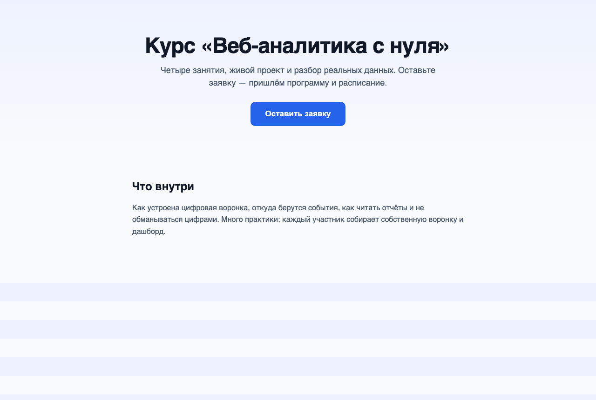
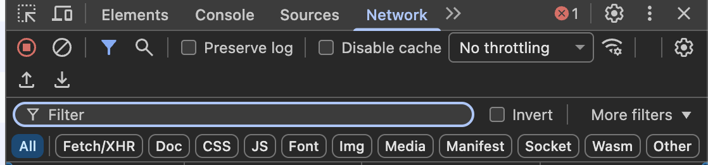
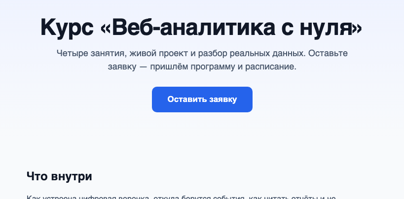
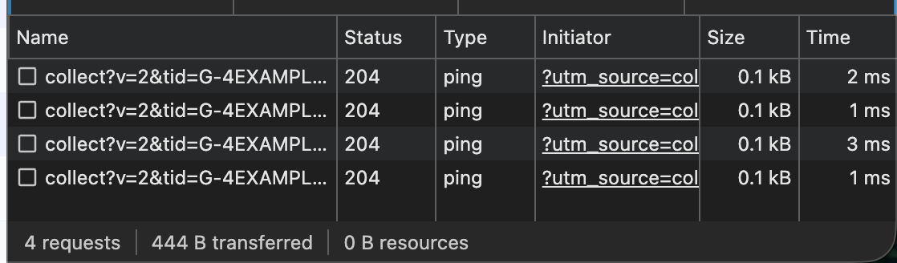
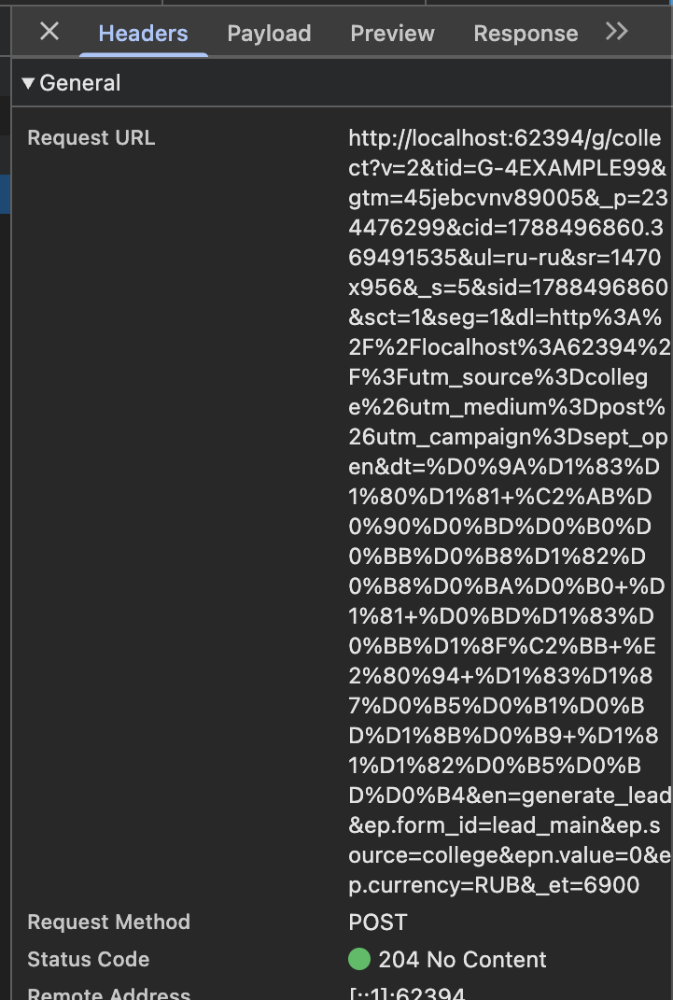
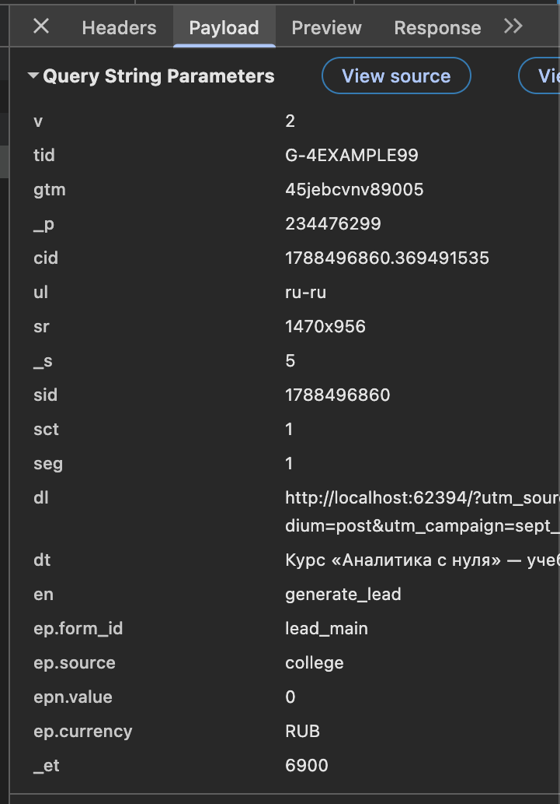
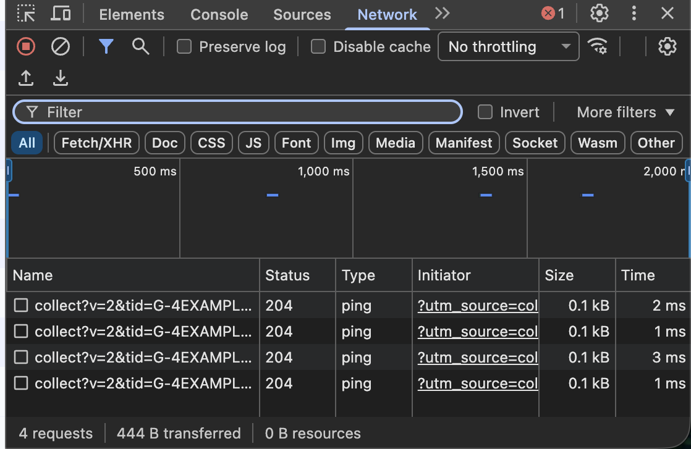

ОП.03 · занятие 1 · 2 академических часа
Цифровая
воронка
Вопрос 1
О чём это
занятие?
Одно предложение, к которому мы вернёмся в конце
Ответ
Про то, что происходит между «человек кликнул ссылку» и «мы увидели цифру в отчёте»
Между этими двумя моментами данные проходят длинный путь через несколько систем. Сегодня мы разберём этот путь по частям: из чего он состоит, кто им управляет и где он рвётся.
К концу пары каждый из вас откроет действующий сайт, своими глазами увидит, какие данные он отправляет, и составит карту этого пути.
Вопрос 2
Что происходит,
когда вы открываете сайт?
Кроме того, что загружается страница
Ответ
Загружается страница — и одновременно сайт сообщает о вас наружу
Открытие страницы — это не один запрос, а несколько десятков. Часть из них ничего не приносит на экран: они уходят на серверы аналитики и сообщают, что страницу открыли. Пока вы читаете и прокручиваете, отправляются новые — уже про ваши действия. Из них и собирается всё, что потом видно в отчётах.

Вопрос 3
Хорошо. А что такое
воронка?
Слово из названия темы, начнём с него
Ответ · определение и происхождение
Воронка — это путь клиента, разбитый на шаги, на каждом из которых часть людей отсеивается
Наверх входит много людей — те, кто увидел рекламу или ссылку. Донизу доходят немногие — те, кто оставил заявку. Форма воронки показывает это сужение: чем ниже шаг, тем меньше людей на нём осталось.
Модель, из которой выросла воронка, предложил рекламист Элиас Сент-Эльмо Льюис в 1898 году: внимание → интерес → желание → действие. Изображать её именно воронкой стали позже; этот образ закрепил Уильям Таунсенд в книге «Bond Salesmanship» (1924).
«Клиента нужно провести через четыре ступени: привлечь внимание, вызвать интерес, пробудить желание и подтолкнуть к действию».
Э. Сент-Эльмо Льюис · модель AIDA, 1898Вопрос 4
Почему её рисуют
сужающейся?
Почему не лестницей и не прямой линией
Ответ
Потому что переход на каждый следующий шаг делают не все
Ширина полосы — это число людей, дошедших до шага. Разница между соседними полосами — потеря на переходе. Именно эти потери нас интересуют: воронку строят не ради красивой картинки, а чтобы найти шаг, на котором отсеивается больше всего.
Вопрос 5
А что значит
«цифровая» воронка?
Воронки строили и до интернета
Ответ
Каждый шаг можно измерить автоматически, потому что действие оставляет цифровой след
До интернета доля дошедших до покупки оценивалась опросами и догадками. В цифровой воронке каждый переход фиксируется сам: нажатие, открытие формы, отправка — всё это записывается в момент, когда происходит. Поэтому воронку видно не приблизительно, а по числам.
«Половину денег, которые я трачу на рекламу, я выбрасываю впустую. Беда в том, что я не знаю, какую именно половину».
фразу приписывают Джону Ванамейкеру, владельцу универмагов, конец XIX векаЦифровая воронка существует, чтобы ответить на этот вопрос — какая половина.
Вопрос 6
Что считается
одним шагом воронки?
Чем измеряется переход
Ответ · первое из четырёх понятий
Событие
Сначала есть действие — то, что человек сделал в интерфейсе: нажал, прокрутил, ввёл текст. Действие само по себе нигде не сохраняется: если его не зафиксировать программно, оно происходит и исчезает.
Событие — это зафиксированный факт действия, переданный в систему аналитики. У него есть имя, например generate_lead, и набор параметров. Событие отвечает на вопрос «что произошло». Исправить переданное событие нельзя — можно только отправить новое.
Шаг воронки — это событие. «Открыли форму» — событие form_start. «Оставили заявку» — событие generate_lead.
Вопрос 7
Значит, 200 событий —
это 200 клиентов?
Здесь чаще всего ошибаются
Ответ · второе понятие
Нет. Событие — это не заявка
Заявка — это запись со смысловыми данными обращения: имя, контакт, текст, источник, время. Она хранится в таблице или системе управления заявками и отвечает на вопрос «с кем и о чём». Одно нажатие кнопки — это событие; заявка появляется, только если человек заполнил и отправил форму.
«Тщеславные метрики — это красивые растущие числа, по которым нельзя понять, что делать дальше. Полезные метрики отвечают на вопрос: какое решение принять».
Эрик Рис, «Бизнес с нуля» (The Lean Startup), 2011 — пересказВопрос 8
Что происходит
с заявкой дальше?
После того как форма отправлена
Ответ · третье понятие и сводка
Её обрабатывают, и у неё меняется статус
Статус — это этап обработки заявки: new, in progress, done, при необходимости rejected. Он отвечает на вопрос «на каком этапе работа» и меняется многократно — людьми и автоматизацией. Заявки и их статусы хранятся в системе управления заявками (CRM).
Аналитик считает события, менеджер работает с заявками, руководитель смотрит на статусы. Три роли — три взгляда на один поток.
Вопрос 9
Как действие
превращается в данные?
Что происходит технически в момент нажатия
Ответ
Программа в браузере отправляет письмо — HTTP-запрос
В момент действия скрипт на странице собирает строку с параметрами и отправляет её на сервер системы аналитики. С точки зрения сети это ничем не отличается от загрузки картинки; разница в том, что вместо картинки передаётся описание произошедшего. Ниже — настоящий запрос, пойманный на учебном стенде после нажатия «Отправить».
Кому: www.google-analytics.com /g/collect · Метод: POST
Вопрос 10
И что написано
внутри этого письма?
Разберём по одному параметру
Ответ · параметры запроса /g/collect · значения с учебного стенда
Каждый ключ — одна строчка смысла
tid=G-4EXAMPLE99Куда поступит событие — идентификатор ресурса аналитики. Разные сайты пишут в разные tid.en=generate_leadИмя события. По нему строят отчёты. Бывает автоматическим (page_view) или заданным вручную.dl=… · dt=…Адрес и заголовок страницы, с которой отправлено событие. В dl видны метки utm_* из ссылки.ep.source=collegeДополнительный параметр. Здесь «college» подставился из метки utm_source в адресе. Без метки было бы (not set)._et=3758Engagement time: 3758 мс — столько человек взаимодействовал со страницей до отправки.Всё, что мы настраиваем в диспетчере тегов и в аналитике, в итоге меняет именно эти строки.
Ответ · продолжение · откуда берётся ep.source
Один и тот же клик, две разные ссылки

utm_source=college, справа — по ссылке без метки. Это и чиним на занятии 2.Вопрос 11
Это можно увидеть
своими глазами?
Без доступа к самой аналитике
Ответ · шаг 1 из 7 · настроить панель
Открыть Network и оставить только запросы аналитики

1 2 3F12 (или Cmd + Option + I) и перейти на вкладку Network.collect — останутся только запросы к системе аналитики.Ответ · шаг 2 из 7 · действие даёт строку
Каждое действие на странице — новая строка в списке


collect?…&en=…Открытие страницы даёт page_view, прокрутка — scroll, нажатие кнопки — select_content, отправка формы — generate_lead. Имя действия записано прямо в адресе строки, в параметре en=.
Ответ · шаг 3 из 7 · открыть запрос → откуда каждый параметр
Клик по строке → вкладка Payload → разбор значений
en=generate_lead←вы нажали кнопку «Отправить»dt=Курс «Аналитика с нуля»…←тег <title> открытой страницыdl=…/?utm_source=college&…←адресная строка браузера целиком, вместе с меткамиep.source=college←кусок utm_source из того же адреса_et=3758←сколько миллисекунд вы были на странице до нажатияtid=G-4EXAMPLE99←настроено на сайте один раз, от вас не зависитЗелёные строки связаны: ep.source — это просто вырезка из адреса dl. На занятии 2 мы задаём метки так, чтобы эта вырезка была осмысленной.
Ответ · шаг 4 из 7 · где в запросе пусто и почему
Тот же запрос, но переход был без метки
en=generate_lead←кнопку нажали — событие естьdl=http://localhost/←адрес есть, но меток в нём нетep.source=(not set)←пусто: вырезать utm_source не из чегоdr=←пусто: перешли не по ссылке, а открыли адрес напрямую — referrer отсутствует(not set) и пустые поля — не ошибка панели. Это честное «значение получить неоткуда». Если в отчёте у половины заявок источник (not set) — значит ссылки размечены не полностью.
Ответ · шаг 5 из 7 · что означают столбцы
Что означают колонки строки collect
en= — имя события.navigator.sendBeacon: браузер дошлёт его, даже если вкладку закрыть.Ответ · шаг 6 из 7 · вкладка Headers
Куда ушёл запрос и что ответил сервер

? — адрес приёмника (/g/collect), после — параметры через &.:// превращается в %3A%2F%2F, буквы — в %D0…. Читать удобнее во вкладке Payload.POST — способ отправки. Данные всё равно лежат в адресе, а не в теле.204 No Content с зелёной точкой — сервер принял запрос, возвращать нечего. Это норма для аналитики.Ответ · шаг 7 из 7 · вкладка Payload · тот же запрос, разобранный по полям
Query String Parameters — все поля события

ru-ru) и разрешение экрана (1470x956)dl лежат метки utm_*generate_lead. Главное поле: по нему строят отчётыlead_main и college6900 мс взаимодействия со страницей до отправкиЧто делать, если строка подсвечена красным
Красная строка — это ответ сервера, а не поломка
/g/collect не обслуживается тем сервером, с которого открыта страница. Запрос ушёл, все параметры во вкладке Payload читаются — для разбора этого достаточно.python3 -m http.server 8000 в папке stend/.https, а приёмник по http — браузер не пропустит. На стенде такого не будет, но на чужих сайтах встречается.Во всех случаях запрос браузер сформировал. Смотреть нужно на Payload: разбор параметров от кода ответа не зависит.
Вопрос 12
Всегда ли так
измеряли?
Короткая историческая справка
Ответ · как считали посещения в разные годы
От журналов сервера к встроенным счётчикам
Вопрос 13
Кто ведёт заявку
от ссылки до отчёта?
Человек или программа
Ответ · маршрут из десяти станций
И человек, и программа — по очереди
Ручными участками управляют люди: ссылку размечает специалист по продвижению, форму заполняет посетитель, статус изменяет менеджер. Остальное работает автоматически.
Вопрос 14
Где на этом маршруте
теряются данные?
И почему именно там
Ответ · четвёртое понятие
На стыках, а не внутри станций
Точка разрыва — стык двух шагов или систем, на котором данные теряются, искажаются или дублируются. Форма не передала поле source — в отчёте у заявки источник останется (not set). Внутри самой формы и самой таблицы данные при этом целы. Рвётся именно на переходе, чаще всего — там, где ручной участок передаёт данные автоматическому.
Вопрос 15
Почему аналитика, таблица
и CRM показывают разные цифры?
Три типичные ловушки
Ответ · как отчёт вводит в заблуждение
Чаще всего — из-за разметки источников
| utm_source=VK | 8 |
| utm_source=vk | 5 |
| utm_source=Vk | 3 |
Одна кампания, размеченная непоследовательно, распадается на строки с малыми числами.
| vk / telegram | 53% |
| (not set) | 47% |
(not set) — не сбой, а «значение не получено». Метку не поставили или потеряли.
| direct | 61% |
| остальное | 39% |
В direct попадают мессенджеры, приложения, письма без меток — недоразмеченный трафик.
Вопрос 16
Что из этого
мы делаем на курсе?
Границы учебного проекта
Ответ
В объективе и за кадром
- один учебный сайт с формой и кнопкой
- воронка из 4 шагов: просмотр → кнопка → форма → заявка
- учебные источники и тестовые заявки
- автоматизация, CRM в учебном режиме, уведомления
- один дашборд на собственных данных
- рекламные бюджеты и закупка трафика
- персональные данные реальных людей
- промышленная CRM и корпоративные интеграции
- серверное отслеживание, модели атрибуции
- нагрузка и масштабирование
Демонстрация · преподаватель · 10 минут
Фиксируем событие generate_lead на учебном стенде
- Открыть учебный стенд (
stend/index.html) →F12→ вкладка Network, фильтрcollect, включить Preserve log. - Перезагрузить страницу → строка
en=page_view. Прокрутить →en=scroll. - Нажать «Оставить заявку», заполнить и отправить форму → появляются
select_content,form_start,generate_lead. - Выбрать
en=generate_lead→ Payload → разобрать параметры:en,dl,ep.form_id,ep.source.

Практическая работа · 48 минут · индивидуально или в паре
Действие на сайте — строка в панели запросов
en=page_view · параметры dl, dten=scrollen=select_contenten=form_starten=generate_lead · ep.source=(not set)В журнал заносите 5–7 событий: действие · имя en · ключевые параметры · система-получатель. Затем заполняете карту воронки по 7 станциям и отмечаете 3 точки разрыва. Если строк collect нет — фильтр collect|mc.yandex|analytics, примите cookie, отключите блокировщик.
Результат занятия · файл funnel_map_01.md, ветка hw-02
Что должно быть в карте воронки v1
- Карта воронки — все 7 станций, у каждой указано: ручное управление или автоматическое.
- Журнал событий — 5–7 событий, зафиксированных лично, с параметрами и системой-получателем.
- Точки разрыва — не менее трёх, для каждой указано последствие далее по маршруту.
- Итог проекта — 2–3 предложения о том, что покажет собранная воронка к концу семестра.
Контрольный вопрос индивидуально: откройте панель запросов, покажите одно своё событие, назовите имя, адрес и один параметр; определите — событие это, заявка или статус.
Домашнее задание · к занятию 2
Максим Николаевич не хочет задавать домашнее задание. Но очень хочет
- Повторить журнал на втором сайте. Ещё один сайт с формой, снова 5–7 событий с параметрами.
- Сравнить два сайта. Где событий больше и почему? Где источник определён (
source,utm_*), а где имеет значение(not set)? Объём — 5–6 предложений. - Сформулировать одну проверяемую гипотезу. Выбрать точку разрыва из своей карты и описать, как проверить её на занятии 2.
Бланк — в PDF с прошлого экрана. Использование ИИ: наблюдения и сравнение — самостоятельно; модель допускается для редактирования формулировок и оформления файла. Я сам так делаю всегда, поэтому и вам запрещать не буду.